01
창립자 메시지
HUROM
창립자 김영기 회장
"휴롬은 사람한테 이로움을 주는 기업입니다. 그 중에서도 사람들의 건강을 위한 기술과 제품으로 기업의 철학을 실현합니다. 따라서 휴롬은 천연 재료를 직접 요리해 건강한 식습관을 가질 수 있도록 건강주스기 '휴롬'을 비롯한 다양한 건강주방가전과 100% 홈메이드 휴롬주스를 통해 인류의 건강과 행복에 기여할 것입니다."
HUROM
휴롬은 "HUMAN"과 "이로움"의 합성어로 "사람에게 이로움을 준다."는 의미입니다.
휴롬의 사명에는 건강에 기여해 인류를 이롭게 하고자 하는 기업 정신이 담겨있습니다.
HUMON + 이로움
02
휴롬의 가치
- 사람
- 진실로 사람을 생각하고 이롭게 하는 마음에서 시작되었습니다.
- 윤리
- 사람을 위한 올바른 기술로 세계 인류의 건강에 이바지합니다.
- 혁신
- 세계 건강주방가전 시장을 선도하느 최첨단 기술을 연구하고 개발합니다.
- 열정
- 끊임없는 도전와 연구 개발로 현대인의 식생활 문화를 바꾸어갑니다.
03
휴롬의 비전
직접 요리하는 것이 가장 안전하고 건강한 먹거리라는 믿음으로
건강에 도움을 주는 다양한 제품을 통해 글로벌 건강 주방가전을 선도해갑니다.
04
휴롬의 미션
사람을 이롭게 하는 기술과 건강한 식문화로 세계 인류의 건강을 생각합니다.
이익보다는 사람이 우선이라는 원칙으로 사람에게 가장 이로운 기술을 구현해 현대인에게 필요한 자연의 건강한 식문화를 선보여 세계 인류의 건강에 기여합니다.
05
휴롬의 새로운 생각
휴롬은 40여년간 건강을 연구해, 세계 최초로 지그시 눌러 짜는 스크루 방식의
건강주스기 ‘휴롬’을 개발하였습니다. 세상에 없던 제품으로 ‘슬로우 주서’라는
새로운 시장을 개척해 세계 주방 가전 시장을 선도하고 있습니다.
- 인류의 행복과 건강에 기여하겠다는 철학
- 사람을 이롭게 하는 제품으로 인류의 행복에 기여하겠다는 기업의 철학은 건강을 구현하는 제품의 연구, 발명으로 이어졌습니다.
- 자연의 위대함에서 먹거리를 찾아야 한다는 신념
- 인류가 건강하기 위해서는 위대한 자연으로부터 먹거리를 찾아야 한다는 생각으로 자연의 원리를 연구했습니다.
- 채소와 과일을 통한 건강한 식습관
- 자연으로부터의 먹거리인 채소와 과일의 섭취가 건강을 위한 필수이기에 채소와 과일의 영양을 가장 효과적으로 섭취할 수 있는 방법을 고민했습니다.
- 장인정신과 확신, 열정
- 수많은 실패와 어려움도 있었지만, 건강주스기가 인류의 건강에 도움을 줄 수 있다는 김영기 회장의 확신과 열정이 있었기에 도전을 멈추지 않았습니다.
06
휴롬의 과학
휴롬은 제품 뿐만 아니라 영양, 라이프스타일 연구 등
통합적인 R&D 투자를 통해 보다 건강하게 살아가는 방식을 연구합니다.
휴롬 바이오 식품 연구 센터
채소, 과일 재료별 또는 혼합을 통한 주스의 관능적 평가와
효능 연구를 통해 휴롬주스의 영양학적 우수성 및 안정성을 검증합니다
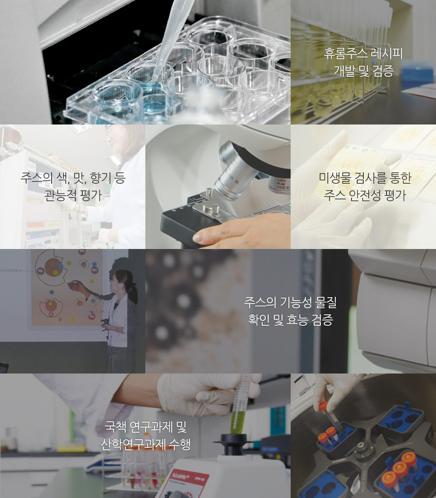
- 휴롬주스 레시피 개발 및 검증
- 주스의 색, 맛, 향기 등 관능적 평가
- 미생물 검사를 통한 주스 안전성 평가
- 주스의 기능성 물질 확인 및 효능 검증
- 국책 연구과제 및 산학연구과제 수행
휴롬 R&D 센터
휴롬은 고객에게 더 나은 제품과 기술을 제공하기 위하여
끊임없이 새로운 것을 만들고 평가하고 개발합니다.
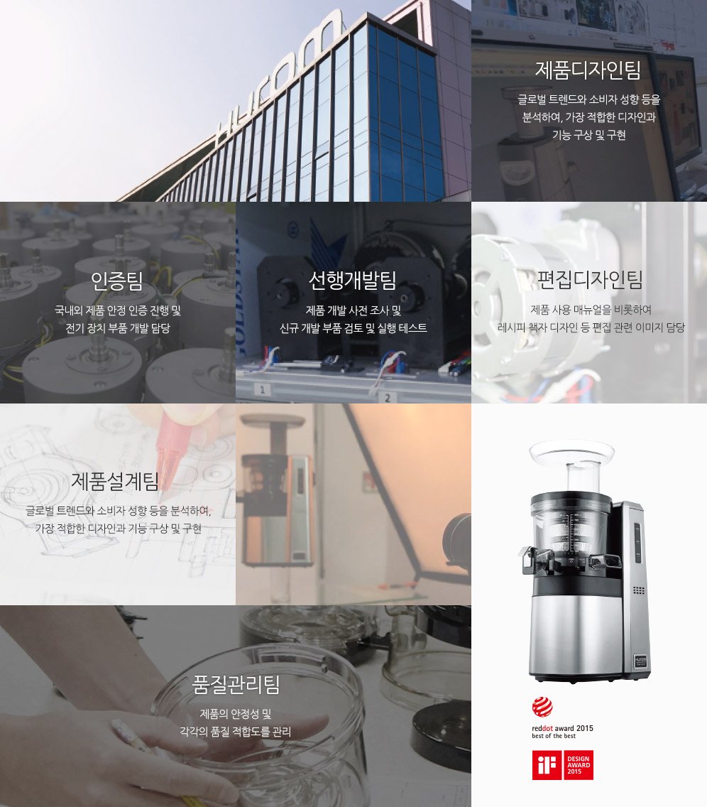
- 제품디자인팀 글로벌 트렌드와 소비자 성향 등을 분석하여, 가장 적합한 디자인과 기능 구상 및 구현
- 인증팀 국내외 제품 안정 인증 진행 및 전기 장치 부품 개발 담당
- 선행개발팀 제품 개발 사전 조사 및 신규 개발 부품 검토 및 실행 테스트
- 편집디자인팀 제품 사용 매뉴얼을 비롯하여 레시피 책자 디자인 등 편집 관련 이미지 담당
- 제품설계팀 글로벌 트렌드와 소비자 성향 등을 분석하여, 가장 적합한 디자인과 기능 구상 및 구현
- 품질관리팀 제품의 안정성 및 각각의 품질 적합도를 관리
07
글로벌 휴롬
세계가 사랑하는 휴롬은 세계 85개국에서 만나실 수 있습니다.
미국과 유럽, 아시아, 남미, 중동에 이르기까지 전세계인의 사랑을 받고 있습니다.
08
휴롬의 역사
2015
- 08 제28회 베이비페어참가
롯데백화점 본점 / 영등포점 / 중동점 / 동래점 / 광복점 / 일산점 휴롬 단독매장오픈 - 07 롯데백화점 잠실점 휴롬단독 매장 오픈
- 06 뉴욕 COFFEED 매장 휴롬주스 런칭
미국 독립기념일 뉴욕시 행사지원 - 05 베트남 호치민 휴롬 주스카페 2호점 오픈
밀라노 엑스포 한국관공식 스폰서 (OECD 포럼)
RED 글로벌 에이즈 캠페인 후원 - 04 일본 미츠코시 백화점 휴롬 매장 오픈
- 03 시카고 IH+HS 전시회 참가
- 02 독일 iF디자인어워드 수상 (HW-SBF15 모델)
독일 Ambiente 전시 참가
휴롬 신공장 이전
2014
- 12 휴롬 2014년 아시아 올해의 제품, 아시아가 주목한
주방가전 부문 수상
휴롬 주스 카페 아시아가 주목한 카페 부문 수상 - 11 휴롬, 생활가전 부문 ‘소셜미디어 대상’ 수상
- 09 2014년 독일 IFA 전시회 7회째 참가
가전주스카페 ‘복합매장’으로 베트남 시장 진출
홈메이드 방식의 병입주스 출시 - 08 2014년 제 26회 베이비페어 참가
현대백화점에 국내 최초 프리미엄 복합매장 오픈 - 04 상해 HOTELREX 전시회 참가
04 광주 CANTON FAIR 종합 무역 전시회 참가
휴롬 산청연수원 개원 - 03 2014년 시카고 IHHS 전시회 참가
휴롬 산청연수원 완공 - 02 2014년 독일 Ambiente 전시회 참가
- 01 2014년 제 25회 베이비페어 참가
신제품 2세대 휴롬 원액기 2013 독일 iF 디자인 어워드 수상
2013
- 12 1억불 수출의 탑 수상
휴롬 주스카페 롯데 프리미엄 아울렛 이천점 오픈
2세대 휴롬, 2013년 아시아 올해의 가전 부문 수상
휴롬 산청연수원 완공 - 10 대한민국 나눔 국민 대상 기획 재정부 장관표창
중국 상해 휴롬 주스 카페 2호점 오픈
중국 서안 휴롬 주스 카페 3호점 오픈 - 09 2014년 독일 IFA 전시회 3년 연속 참가
2013년 GOOD DESIGN 선정 - 08 2013년 제 24회 베이비페어 참가
중국 상해 휴롬 주스카페 1호점 오픈 - 06 2013년 International Design Excellence Awards 수상
- 05 2013년 쿤산 CIE 전시회 참가
휴롬 주스카페 광화문점 오픈
2013 REDDOT PRODUCT DESIGN AWARD 수상 - 04 2013년 홍콩 HKEF, 광주 Canton 전시회 참가
- 03 2013년 시카고 IH+HS 전시회 참가
모범 납세자의 날 기획 재정부 장관 표창
휴롬 주스카페 분당 수내점 오픈 - 02 2013년 독일 Ambiente 전시회 참가
2012
- 12 2012 세계 일류상품 재선정
제 49회 무역의 날 휴롬 2천만불 탑 수상
휴롬엘에스 5천만불 탑 수상 - 09 김해산업단지 제 2공장 완공
중국 도문시 제 3공장 완공
2012년 독일 IFA 전시회 참가 - 07 휴롬 서울지사 사옥 오픈
휴롬주스카페 휴롬팜 도산대로 2호점 오픈 - 05 휴롬 주스카페 휴롬팜 분당 율동공원 1호점 오픈
2012년 쿤산 CIE 전시회 참가
휴롬 주스 카페 휴롬팜 드라마 제작 지원 PPL(그대없인 못살아) - 04 2012년 광주 Canton 전시회 참가
휴롬 쉐프 창단
휴롬팜 상표 출원 - 03 2012년 시카고 IHHS 전시회 참가
- 02 2012년 독일 Ambiente 전시회 2년연속 참가
2011
- 11 휴롬 주스 카페 휴롬팜 법인 설립
- 10영국 헤로즈 백화점 ´한국 특별전´ 참가
- 09 2011년 독일 IFA 2011 전시회 참가
- 06 동아산업 ㈜ 가 ㈜ 휴롬으로 사업자명 변경
휴롬 R&D 센터 준공
휴롬 일본 법인 설립
2010
- 11 휴롬원액기 2010년 세계 일류상품 선정
- 10 ´제 47회 무역의 날´ 오백만불 수출의 탑 대통령상 수상
독일 뉘른베르크 국제 발명품 전시회 휴롬원액기 금상 수상 - 06 미국 피츠버그 국제 발명품 전시회 휴롬원액기 금상 수상
- 04 휴롬 원액기 TV 홈쇼핑 런칭
2009
- 02 중국 TV홈쇼핑 (CCTV) 런칭
2008
- 03 SSS™ 방식을 이용한 원액기 브랜드 ´휴롬´ 개발
2005
- 10 SSS™ (Slow Squeeaing System) 방식 연구 개발
- 01 전기 녹즙기 프리미엄 (DH-1000) 개발 출시
2004
- 11 서울 국제 박람회 금상 수상
- 10 세계 일류상품 인증업체 지정 – 산업 자원부 장관
- 07 ㈜ 동아산업 중국지사 설립 (청도)
2003
- 12 일본실용신안등록 (제 2092877호) 착즙분쇄기
2002
- 11 제 39회 무역의 날 국무총리 표창장 수상
- 05 특허청 신지식 특허인상 (동아산업㈜ 대표이사 김영기)
2001
- 11 독일 국제 아이디어 발명품 전시회 전기 녹즙기 동상 수상
- 08 대한상공회의소 선정 ´2001 대한민국 특허 기술대전´ 동상 수상
- 05 수출 유망 중소기업 지정
1998
- 01 전기 녹즙기 ´오스카 다기능 녹즙기´ 개발 판매 (502 모델)
1996
- 07 ㈜ 동아산업 으로 상호 변경 (가전 주방용품)
- 06 특허청 전기 녹즙기 발명 특허 (등록번호: 제 1000002호)
1995
- 07 전기 녹즙기 ´하이센스 매직´ 개발 (301 모델)
1993
- 03 전기 녹즙기 ´핸디나인´ 개발 (101모델)
1979
- 10 ㈜ 판정정밀 설립 (전자부품 및 주방기구 제조업)
1974
- 10 개성공업사 설립 (TV부품 생산업체)
09
휴롬 주스카페
건강한 삶을 추구하는 휴롬의 철학이 구현되는 곳으로
휴롬주스로 건강을 직접 전하는 공간입니다.
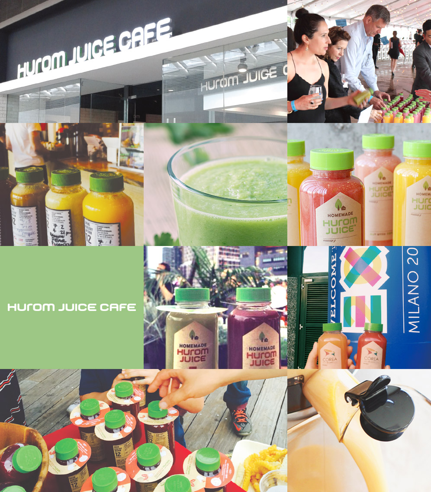
휴롬주스
세계 최초 스크루방식 주스기인 휴롬으로 만든 휴롬주스는 ‘신선한채소, 과일을 즉석에서 지그시 눌러 짜
자연의 맛과 영양이 살아있는주스’로 세상에서 가장 건강한 주스입니다.
-
건강주스
채소 녹즙과 과일 주스를 다양한 맛과
영양을 한 잔에 담아낸 혼합주스 -
홈메이드 맞춤주스
신선한 재료를 직접 골라
한 잔 한 잔 정성을 다해 만든 홈메이드 주스 -
효소가 살아있는 생주스
자연 그대로 즉석에서 지그시 눌러 짜
생명 필수영양소인 효소가 살아있는 주스
휴롬주스를 즐기는 2가지 방법
휴롬주스카페에서는 채소와 과일섭취가 부족한 현대인이 쉽고 간편하게
건강을 챙길 수 있도록 집에서 만든 휴롬주스 그대로, 홈메이드 주스를 만날 수 있습니다.
집에서 만든 홈메이드 휴롬주스
I가정에서 만드는 건강한 홈메이드 휴롬주스
휴롬주스카페의 홈메이드 휴롬주스
집 밖, 언제 어디서든 간편하게 건강한 휴롬주스를 통해 건강을 챙길 수 있습니다.
휴롬 주스카페에서는
신선한 채소와 과일을 직접 골라 주문과 동시에 즉석에서 바로 착즙하는
홈메이드 휴롬주스를 제공하고 있습니다. 또한 개인의 건강 상태에 맞는 맞춤 주스를 제공합니다.
- 가장 건강한 주스
- 세계 최고 지그시 눌러짜는 스크류 방식의 건강주스기 휴롬으로 만든 가장 건강한 휴롬주스를 마실 수 있습니다.
- 건강한 식문화
- 휴롬주스카페는 건강한 라이프 스타일을 추구하는 공간입니다.
- 체질별 맞춤주스
- 휴롬 주스카페에서는 개인의 체질에 맞춰 전문가의 분석과 연구를 통한 레시피를 제공합니다.
- 파이토스가 만든 홈메이드 주스
- 채소 과일 전문가인 파이토스가 주문 즉시 직접 만들어 정성이 담긴 홈메이드 휴롬주스를 제공합니다.
10
글로벌 휴롬 주스카페
휴롬주스는 전 세계 8개국에 수출되어
각 나라의 20여개 매장에서 건강을 전하고 있습니다.
Korea
- 01 도산대로점
- 02 홈플러스 부산아시아드점
- 03 광화문점
- 04 홈플러스 울산점
- 05 롯데아울렛 이천점
- 06 홈플러스 인천 작전점
- 07 현대백화점 천호점
Global
- 01 미국 – COFFEED
- 02 Japan – SUN FRUITS
- 03 중국 13개 직영점, 200개 이상의 파트너
- 04 미국베트남 2개 직영점, 2015년 4개 지점 확장예정
- 05 태국, 인도네시아, 말레이시아, 확장 예정
11
오시는 길
-
본사(제1공장)
- 주소
- 경상남도 김해시 주촌면 골든루트로 80-60 (경남 김해시 주촌면 농소리 627-1)
- 영문주소
- 80-60, Golden root-ro, Juchon-myeon, Gimhae-si, Gyeongsangnam-do
- 전화
- 055-724-1700
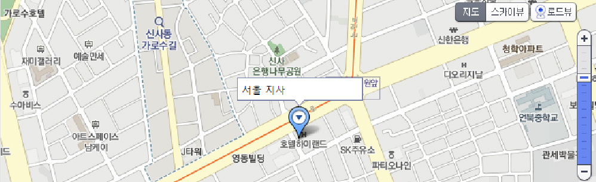 -
서울 지사
- 주소
- 서울특별시 강남구 도산대로 164 (서울특별시 강남구 논현동 7번지 휴롬빌딩)
- 영문주소
- 164, Dosan-daero, Gangnam-gu, Seoul
- 전화
- 02-6942-1700
-
제2공장
- 주소
- 경상남도 김해시 주촌면 골든루트로 158-199 (경남 김해시 주촌면 망덕리 872-12)
- 영문주소
- 158-19, Golden root-ro, Juchon-myeon, Gimhae-si, Gyeongsangnam-do
- 전화
- 055-343-7071
-
HUROM CHINA
- ADDRESS
- NO.765, AHSHANG AVENUE, JINGJIKAIFA DISTRICT, TUMEN CITY, JILIN PROVINCE, CHINA
- TEL
- +86-433-365-8932
- FAX
- +86-433-365-8131
-
HUROM CHINA SHANGHAI OFFICE
- ADDRESS
- LAIYINHONGJING BLDG ROOM 601/611, NO.1439, WUZHONG ROAD, MINHANG DISTRICT, SHANGHAI, CHINA
- TEL
- +86-21-5471-3010
-
HUROM OFFICE IN JAPAN
- ADDRESS
- 2F, T・IBUILING, 1-8-12 MINATO CHUO CITY, TOKYO, JAPAN
- TEL
- +81-3-5542-3266
- FAX
- +81-3-5542-3267
-
HUROM INDIA BRANCH OFFICE
- ADDRESS
- G-122 SUSHANT SHOPPING ARCADE, SUSHANT LOK-1 GURGAON, HARYANA
- TEL
- +91-124-427-3500/3600
-
HUROM EUROPE BRANCH OFFICE
- ADDRESS
- BOUWERIJ 100, 1185XX AMSTELVEEN THE NETHERLANDS
- TEL
- +31-20-8907002
-
휴롬서비스센터 강남점
- 주소
- 서울특별시 강남구 논현동 도산대로 164 휴롬주스카페 2층 (서울특별시 강남구 논현동 7번지 휴롬주스카페 2층)
- 영문주소
- Huromjuicecafe 2F, 164, Dosan-daero, Gangnam-gu, Seoul, Korea
- 대표전화
- 1544-7011
-
휴롬서비스센터 목동점
- 주소
- 서울특별시 양천구 목1동 오목로 56길 2 영원빌딩 102호(서울특별시 양천구 목1동 405-396번지 영원빌딩 102호)
- 영문주소
- Youngone Bldg. 102,Ohmokro 56, Mok 1-dong, Yangcheon-gu, Seoul, Korea
- 대표전화
- 1544-7011
-
휴롬인재개발원
- 주소
- 경상남도 산청군 금서면 동의보감로 645-40 (경상남도 산청군 금서면 신아리 산96-11)
- 영문주소
- H645-40, Donguibogam-ro, Geumseo-myeon, Sancheong-gun, Gyeongsangnam-do
- 전화
- 055-720-9000
-
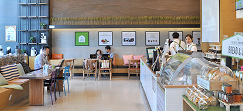
도산대로점
- 주소
- 서울특별시 강남구 논현동 7번지 휴롬빌딩 1층 휴롬주스카페
- 전화
- 070-4351-1889
-
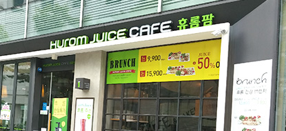
광화문점
- 주소
- 서울시 종로구 중학동 19번지 더케이트윈타워스 B동 1층 휴롬주스카페
- 전화
- 070-4351-1918
-
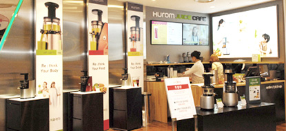
현대백화점 천호점
- 주소
- 서울 강동구 천호대로 1005현대백화점(천호동)10층
- 전화
- 070-4351-1850
-
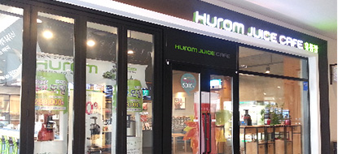
롯데아울렛 이천점
- 주소
- 경기도 이천시 호법면 프리미엄아울렛로 177-119 롯데프리미엄아울렛 2층
- 전화
- 070-4351-2088
-
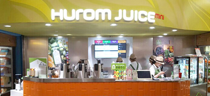
홈플러스 작전점
- 주소
- 인천광역시 계양구 게양대로 27 (작전동) 1층 홈플러스 휴롬팜
- 전화
- 070-4351-0294
-
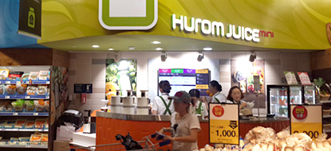
홈플러스 울산점
- 주소
- 울산광역시 중구 번영로 475 (복산동) 1층 홈플러스 휴롬팜
- 전화
- 070-4351-0270
-
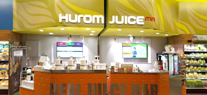
홈플러스 아시아드점
- 주소
- 부산광역시 연제구 종합운동장로 7 (거제동) 1층 홈플러스 휴롬팜
- 전화
- 070-4351-6008